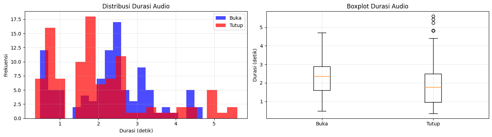
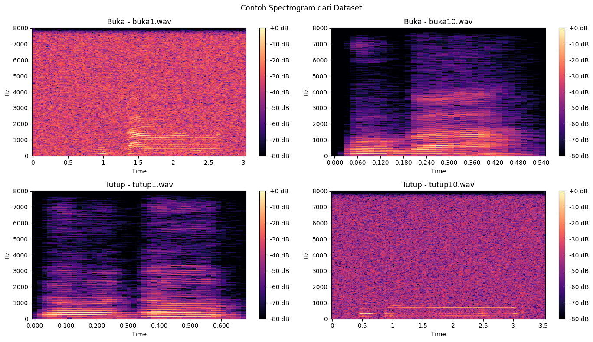
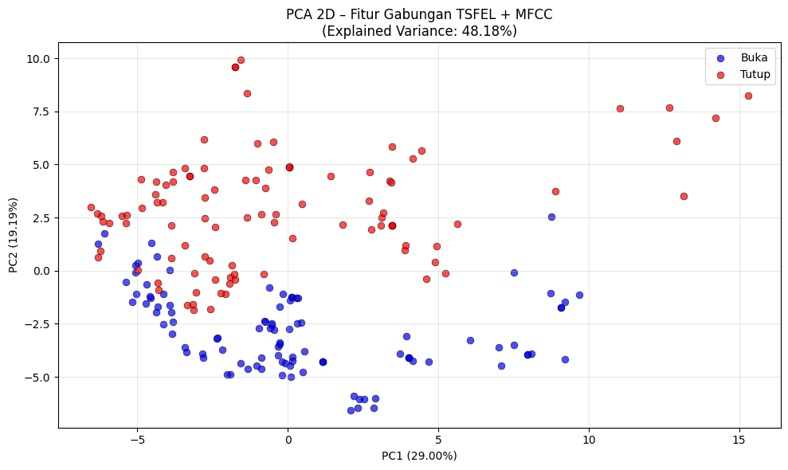
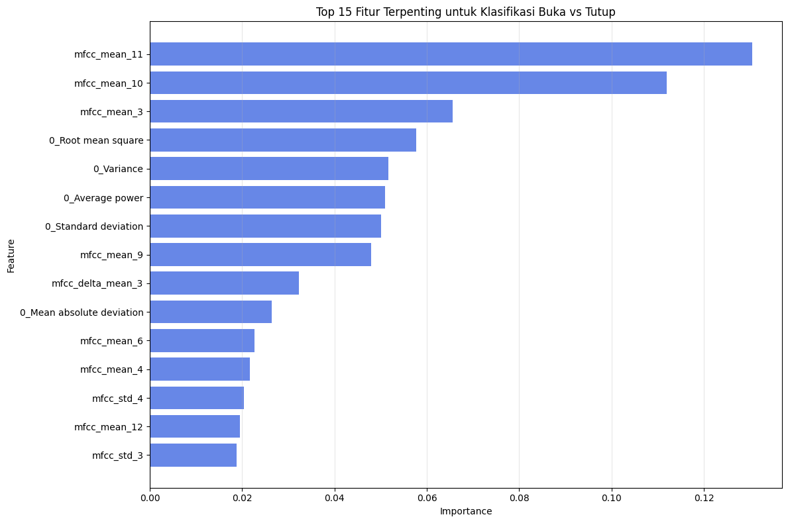

Analisis Voice (Audio) menggunakan TSFEL#
Feature extraction audio (voice) dengan [TSFEL] untuk klasifikasi suara “buka” dan “tutup”
0) Persiapan lingkungan (install & import)#
!pip install streamlit streamlit-webrtc audio-recorder-streamlit tsfel librosa soundfile numpy pandas matplotlib scikit-learn scipy pydub av joblib tqdm
Requirement already satisfied: streamlit in /usr/local/python/3.12.1/lib/python3.12/site-packages (1.51.0)
Requirement already satisfied: streamlit-webrtc in /usr/local/python/3.12.1/lib/python3.12/site-packages (0.63.11)
Requirement already satisfied: audio-recorder-streamlit in /usr/local/python/3.12.1/lib/python3.12/site-packages (0.0.10)
Requirement already satisfied: tsfel in /usr/local/python/3.12.1/lib/python3.12/site-packages (0.2.0)
Requirement already satisfied: librosa in /usr/local/python/3.12.1/lib/python3.12/site-packages (0.11.0)
Requirement already satisfied: soundfile in /usr/local/python/3.12.1/lib/python3.12/site-packages (0.13.1)
Requirement already satisfied: numpy in /usr/local/python/3.12.1/lib/python3.12/site-packages (1.26.4)
Requirement already satisfied: pandas in /usr/local/python/3.12.1/lib/python3.12/site-packages (2.1.4)
Requirement already satisfied: matplotlib in /usr/local/python/3.12.1/lib/python3.12/site-packages (3.7.5)
Requirement already satisfied: scikit-learn in /usr/local/python/3.12.1/lib/python3.12/site-packages (1.4.2)
Requirement already satisfied: scipy in /usr/local/python/3.12.1/lib/python3.12/site-packages (1.11.4)
Requirement already satisfied: pydub in /usr/local/python/3.12.1/lib/python3.12/site-packages (0.25.1)
Requirement already satisfied: av in /usr/local/python/3.12.1/lib/python3.12/site-packages (16.0.1)
Requirement already satisfied: joblib in /usr/local/python/3.12.1/lib/python3.12/site-packages (1.3.2)
Requirement already satisfied: tqdm in /usr/local/python/3.12.1/lib/python3.12/site-packages (4.67.1)
Requirement already satisfied: altair!=5.4.0,!=5.4.1,<6,>=4.0 in /usr/local/python/3.12.1/lib/python3.12/site-packages (from streamlit) (4.2.2)
Requirement already satisfied: blinker<2,>=1.5.0 in /usr/local/python/3.12.1/lib/python3.12/site-packages (from streamlit) (1.9.0)
Requirement already satisfied: cachetools<7,>=4.0 in /usr/local/python/3.12.1/lib/python3.12/site-packages (from streamlit) (6.2.1)
Requirement already satisfied: click<9,>=7.0 in /usr/local/python/3.12.1/lib/python3.12/site-packages (from streamlit) (8.2.1)
Requirement already satisfied: packaging<26,>=20 in /home/codespace/.local/lib/python3.12/site-packages (from streamlit) (25.0)
Requirement already satisfied: pillow<13,>=7.1.0 in /home/codespace/.local/lib/python3.12/site-packages (from streamlit) (11.3.0)
Requirement already satisfied: protobuf<7,>=3.20 in /usr/local/python/3.12.1/lib/python3.12/site-packages (from streamlit) (6.33.0)
Requirement already satisfied: pyarrow<22,>=7.0 in /usr/local/python/3.12.1/lib/python3.12/site-packages (from streamlit) (21.0.0)
Requirement already satisfied: requests<3,>=2.27 in /home/codespace/.local/lib/python3.12/site-packages (from streamlit) (2.32.4)
Requirement already satisfied: tenacity<10,>=8.1.0 in /usr/local/python/3.12.1/lib/python3.12/site-packages (from streamlit) (9.1.2)
Requirement already satisfied: toml<2,>=0.10.1 in /usr/local/python/3.12.1/lib/python3.12/site-packages (from streamlit) (0.10.2)
Requirement already satisfied: typing-extensions<5,>=4.4.0 in /home/codespace/.local/lib/python3.12/site-packages (from streamlit) (4.14.1)
Requirement already satisfied: watchdog<7,>=2.1.5 in /usr/local/python/3.12.1/lib/python3.12/site-packages (from streamlit) (6.0.0)
Requirement already satisfied: gitpython!=3.1.19,<4,>=3.0.7 in /home/codespace/.local/lib/python3.12/site-packages (from streamlit) (3.1.44)
Requirement already satisfied: pydeck<1,>=0.8.0b4 in /usr/local/python/3.12.1/lib/python3.12/site-packages (from streamlit) (0.9.1)
Requirement already satisfied: tornado!=6.5.0,<7,>=6.0.3 in /home/codespace/.local/lib/python3.12/site-packages (from streamlit) (6.5.1)
Requirement already satisfied: python-dateutil>=2.8.2 in /home/codespace/.local/lib/python3.12/site-packages (from pandas) (2.9.0.post0)
Requirement already satisfied: pytz>=2020.1 in /home/codespace/.local/lib/python3.12/site-packages (from pandas) (2025.2)
Requirement already satisfied: tzdata>=2022.1 in /home/codespace/.local/lib/python3.12/site-packages (from pandas) (2025.2)
Requirement already satisfied: entrypoints in /usr/local/python/3.12.1/lib/python3.12/site-packages (from altair!=5.4.0,!=5.4.1,<6,>=4.0->streamlit) (0.4)
Requirement already satisfied: jinja2 in /home/codespace/.local/lib/python3.12/site-packages (from altair!=5.4.0,!=5.4.1,<6,>=4.0->streamlit) (3.1.6)
Requirement already satisfied: jsonschema>=3.0 in /home/codespace/.local/lib/python3.12/site-packages (from altair!=5.4.0,!=5.4.1,<6,>=4.0->streamlit) (4.24.0)
Requirement already satisfied: toolz in /usr/local/python/3.12.1/lib/python3.12/site-packages (from altair!=5.4.0,!=5.4.1,<6,>=4.0->streamlit) (1.1.0)
Requirement already satisfied: gitdb<5,>=4.0.1 in /home/codespace/.local/lib/python3.12/site-packages (from gitpython!=3.1.19,<4,>=3.0.7->streamlit) (4.0.12)
Requirement already satisfied: smmap<6,>=3.0.1 in /home/codespace/.local/lib/python3.12/site-packages (from gitdb<5,>=4.0.1->gitpython!=3.1.19,<4,>=3.0.7->streamlit) (5.0.2)
Requirement already satisfied: charset_normalizer<4,>=2 in /home/codespace/.local/lib/python3.12/site-packages (from requests<3,>=2.27->streamlit) (3.4.2)
Requirement already satisfied: idna<4,>=2.5 in /home/codespace/.local/lib/python3.12/site-packages (from requests<3,>=2.27->streamlit) (3.10)
Requirement already satisfied: urllib3<3,>=1.21.1 in /home/codespace/.local/lib/python3.12/site-packages (from requests<3,>=2.27->streamlit) (2.5.0)
Requirement already satisfied: certifi>=2017.4.17 in /home/codespace/.local/lib/python3.12/site-packages (from requests<3,>=2.27->streamlit) (2025.7.9)
Requirement already satisfied: aioice>=0.10.1 in /usr/local/python/3.12.1/lib/python3.12/site-packages (from streamlit-webrtc) (0.10.1)
Requirement already satisfied: aiortc>=1.11.0 in /usr/local/python/3.12.1/lib/python3.12/site-packages (from streamlit-webrtc) (1.14.0)
Requirement already satisfied: ipython>=7.4.0 in /home/codespace/.local/lib/python3.12/site-packages (from tsfel) (9.4.0)
Requirement already satisfied: PyWavelets>=1.4.1 in /usr/local/python/3.12.1/lib/python3.12/site-packages (from tsfel) (1.9.0)
Requirement already satisfied: setuptools>=47.1.1 in /home/codespace/.local/lib/python3.12/site-packages (from tsfel) (80.9.0)
Requirement already satisfied: statsmodels>=0.12.0 in /usr/local/python/3.12.1/lib/python3.12/site-packages (from tsfel) (0.14.5)
Requirement already satisfied: audioread>=2.1.9 in /usr/local/python/3.12.1/lib/python3.12/site-packages (from librosa) (3.1.0)
Requirement already satisfied: numba>=0.51.0 in /usr/local/python/3.12.1/lib/python3.12/site-packages (from librosa) (0.61.2)
Requirement already satisfied: decorator>=4.3.0 in /home/codespace/.local/lib/python3.12/site-packages (from librosa) (5.2.1)
Requirement already satisfied: pooch>=1.1 in /usr/local/python/3.12.1/lib/python3.12/site-packages (from librosa) (1.8.2)
Requirement already satisfied: soxr>=0.3.2 in /usr/local/python/3.12.1/lib/python3.12/site-packages (from librosa) (0.5.0.post1)
Requirement already satisfied: lazy_loader>=0.1 in /usr/local/python/3.12.1/lib/python3.12/site-packages (from librosa) (0.4)
Requirement already satisfied: msgpack>=1.0 in /usr/local/python/3.12.1/lib/python3.12/site-packages (from librosa) (1.1.2)
Requirement already satisfied: cffi>=1.0 in /usr/local/python/3.12.1/lib/python3.12/site-packages (from soundfile) (2.0.0)
Requirement already satisfied: contourpy>=1.0.1 in /home/codespace/.local/lib/python3.12/site-packages (from matplotlib) (1.3.2)
Requirement already satisfied: cycler>=0.10 in /home/codespace/.local/lib/python3.12/site-packages (from matplotlib) (0.12.1)
Requirement already satisfied: fonttools>=4.22.0 in /home/codespace/.local/lib/python3.12/site-packages (from matplotlib) (4.58.5)
Requirement already satisfied: kiwisolver>=1.0.1 in /home/codespace/.local/lib/python3.12/site-packages (from matplotlib) (1.4.8)
Requirement already satisfied: pyparsing>=2.3.1 in /home/codespace/.local/lib/python3.12/site-packages (from matplotlib) (3.2.3)
Requirement already satisfied: threadpoolctl>=2.0.0 in /home/codespace/.local/lib/python3.12/site-packages (from scikit-learn) (3.6.0)
Requirement already satisfied: dnspython>=2.0.0 in /usr/local/python/3.12.1/lib/python3.12/site-packages (from aioice>=0.10.1->streamlit-webrtc) (2.8.0)
Requirement already satisfied: ifaddr>=0.2.0 in /usr/local/python/3.12.1/lib/python3.12/site-packages (from aioice>=0.10.1->streamlit-webrtc) (0.2.0)
Requirement already satisfied: cryptography>=44.0.0 in /usr/local/python/3.12.1/lib/python3.12/site-packages (from aiortc>=1.11.0->streamlit-webrtc) (46.0.3)
Requirement already satisfied: google-crc32c>=1.1 in /usr/local/python/3.12.1/lib/python3.12/site-packages (from aiortc>=1.11.0->streamlit-webrtc) (1.7.1)
Requirement already satisfied: pyee>=13.0.0 in /usr/local/python/3.12.1/lib/python3.12/site-packages (from aiortc>=1.11.0->streamlit-webrtc) (13.0.0)
Requirement already satisfied: pylibsrtp>=0.10.0 in /usr/local/python/3.12.1/lib/python3.12/site-packages (from aiortc>=1.11.0->streamlit-webrtc) (1.0.0)
Requirement already satisfied: pyopenssl>=25.0.0 in /usr/local/python/3.12.1/lib/python3.12/site-packages (from aiortc>=1.11.0->streamlit-webrtc) (25.3.0)
Requirement already satisfied: pycparser in /home/codespace/.local/lib/python3.12/site-packages (from cffi>=1.0->soundfile) (2.22)
Requirement already satisfied: ipython-pygments-lexers in /home/codespace/.local/lib/python3.12/site-packages (from ipython>=7.4.0->tsfel) (1.1.1)
Requirement already satisfied: jedi>=0.16 in /home/codespace/.local/lib/python3.12/site-packages (from ipython>=7.4.0->tsfel) (0.19.2)
Requirement already satisfied: matplotlib-inline in /home/codespace/.local/lib/python3.12/site-packages (from ipython>=7.4.0->tsfel) (0.1.7)
Requirement already satisfied: pexpect>4.3 in /home/codespace/.local/lib/python3.12/site-packages (from ipython>=7.4.0->tsfel) (4.9.0)
Requirement already satisfied: prompt_toolkit<3.1.0,>=3.0.41 in /home/codespace/.local/lib/python3.12/site-packages (from ipython>=7.4.0->tsfel) (3.0.51)
Requirement already satisfied: pygments>=2.4.0 in /home/codespace/.local/lib/python3.12/site-packages (from ipython>=7.4.0->tsfel) (2.19.2)
Requirement already satisfied: stack_data in /home/codespace/.local/lib/python3.12/site-packages (from ipython>=7.4.0->tsfel) (0.6.3)
Requirement already satisfied: traitlets>=5.13.0 in /home/codespace/.local/lib/python3.12/site-packages (from ipython>=7.4.0->tsfel) (5.14.3)
Requirement already satisfied: wcwidth in /home/codespace/.local/lib/python3.12/site-packages (from prompt_toolkit<3.1.0,>=3.0.41->ipython>=7.4.0->tsfel) (0.2.13)
Requirement already satisfied: parso<0.9.0,>=0.8.4 in /home/codespace/.local/lib/python3.12/site-packages (from jedi>=0.16->ipython>=7.4.0->tsfel) (0.8.4)
Requirement already satisfied: MarkupSafe>=2.0 in /home/codespace/.local/lib/python3.12/site-packages (from jinja2->altair!=5.4.0,!=5.4.1,<6,>=4.0->streamlit) (3.0.2)
Requirement already satisfied: attrs>=22.2.0 in /home/codespace/.local/lib/python3.12/site-packages (from jsonschema>=3.0->altair!=5.4.0,!=5.4.1,<6,>=4.0->streamlit) (25.3.0)
Requirement already satisfied: jsonschema-specifications>=2023.03.6 in /home/codespace/.local/lib/python3.12/site-packages (from jsonschema>=3.0->altair!=5.4.0,!=5.4.1,<6,>=4.0->streamlit) (2025.4.1)
Requirement already satisfied: referencing>=0.28.4 in /home/codespace/.local/lib/python3.12/site-packages (from jsonschema>=3.0->altair!=5.4.0,!=5.4.1,<6,>=4.0->streamlit) (0.36.2)
Requirement already satisfied: rpds-py>=0.7.1 in /home/codespace/.local/lib/python3.12/site-packages (from jsonschema>=3.0->altair!=5.4.0,!=5.4.1,<6,>=4.0->streamlit) (0.26.0)
Requirement already satisfied: llvmlite<0.45,>=0.44.0dev0 in /usr/local/python/3.12.1/lib/python3.12/site-packages (from numba>=0.51.0->librosa) (0.44.0)
Requirement already satisfied: ptyprocess>=0.5 in /home/codespace/.local/lib/python3.12/site-packages (from pexpect>4.3->ipython>=7.4.0->tsfel) (0.7.0)
Requirement already satisfied: platformdirs>=2.5.0 in /home/codespace/.local/lib/python3.12/site-packages (from pooch>=1.1->librosa) (4.3.8)
Requirement already satisfied: six>=1.5 in /home/codespace/.local/lib/python3.12/site-packages (from python-dateutil>=2.8.2->pandas) (1.17.0)
Requirement already satisfied: patsy>=0.5.6 in /usr/local/python/3.12.1/lib/python3.12/site-packages (from statsmodels>=0.12.0->tsfel) (1.0.1)
Requirement already satisfied: executing>=1.2.0 in /home/codespace/.local/lib/python3.12/site-packages (from stack_data->ipython>=7.4.0->tsfel) (2.2.0)
Requirement already satisfied: asttokens>=2.1.0 in /home/codespace/.local/lib/python3.12/site-packages (from stack_data->ipython>=7.4.0->tsfel) (3.0.0)
Requirement already satisfied: pure-eval in /home/codespace/.local/lib/python3.12/site-packages (from stack_data->ipython>=7.4.0->tsfel) (0.2.3)
[notice] A new release of pip is available: 25.2 -> 25.3
[notice] To update, run: python -m pip install --upgrade pip
import numpy as np
import pandas as pd
import matplotlib.pyplot as plt
# Audio utils
import soundfile as sf # baca/tulis wav
import librosa # pemrosesan audio
import librosa.display
# TSFEL
import tsfel
1) Muat semua file audio dari folder buka dan tutup#
import os
from pathlib import Path
# Path ke folder dataset
BUKA_PATH = './voice_augmented//buka/'
TUTUP_PATH = './voice_augmented//tutup/'
# Parameter sampling
TARGET_SR = 16000 # 16 kHz umum untuk speech
# Fungsi untuk memuat dan preprocess audio
def load_audio_file(file_path, sr=16000):
"""Memuat file audio, trim silence, dan normalisasi"""
y, sample_rate = librosa.load(file_path, sr=sr, mono=True)
# Trim silence di awal/akhir
y_trimmed, _ = librosa.effects.trim(y, top_db=25)
# Normalisasi amplitudo
if np.max(np.abs(y_trimmed)) > 0:
y_trimmed = y_trimmed / np.max(np.abs(y_trimmed))
return y_trimmed, sample_rate
# Kumpulkan semua file audio
audio_data = []
labels = []
filenames = []
# Load file dari folder buka
buka_files = sorted([f for f in os.listdir(BUKA_PATH) if f.endswith('.wav')])
print(f"Loading {len(buka_files)} file dari folder 'buka'...")
for file in buka_files:
file_path = os.path.join(BUKA_PATH, file)
y, sr = load_audio_file(file_path, TARGET_SR)
audio_data.append(y)
labels.append(0) # Label 0 untuk "buka"
filenames.append(file)
# Load file dari folder tutup
tutup_files = sorted([f for f in os.listdir(TUTUP_PATH) if f.endswith('.wav')])
print(f"Loading {len(tutup_files)} file dari folder 'tutup'...")
for file in tutup_files:
file_path = os.path.join(TUTUP_PATH, file)
y, sr = load_audio_file(file_path, TARGET_SR)
audio_data.append(y)
labels.append(1) # Label 1 untuk "tutup"
filenames.append(file)
print(f"\nTotal audio loaded: {len(audio_data)}")
print(f"Buka: {labels.count(0)}, Tutup: {labels.count(1)}")
print(f"Sampling rate: {TARGET_SR} Hz")
# Visualisasi beberapa contoh waveform
fig, axes = plt.subplots(2, 2, figsize=(14, 6))
fig.suptitle('Contoh Waveform dari Dataset')
# Plot 2 contoh dari "buka"
for i in range(2):
librosa.display.waveshow(audio_data[i], sr=TARGET_SR, ax=axes[0, i])
axes[0, i].set_title(f'Buka - {filenames[i]}')
axes[0, i].set_xlabel('Waktu (detik)')
axes[0, i].set_ylabel('Amplitudo')
# Plot 2 contoh dari "tutup"
buka_count = labels.count(0)
for i in range(2):
librosa.display.waveshow(audio_data[buka_count + i], sr=TARGET_SR, ax=axes[1, i])
axes[1, i].set_title(f'Tutup - {filenames[buka_count + i]}')
axes[1, i].set_xlabel('Waktu (detik)')
axes[1, i].set_ylabel('Amplitudo')
plt.tight_layout()
plt.show()
Loading 100 file dari folder 'buka'...
Loading 100 file dari folder 'tutup'...
Total audio loaded: 200
Buka: 100, Tutup: 100
Sampling rate: 16000 Hz
---------------------------------------------------------------------------
KeyboardInterrupt Traceback (most recent call last)
Cell In[3], line 74
71 axes[1, i].set_ylabel('Amplitudo')
73 plt.tight_layout()
---> 74 plt.show()
File /usr/local/python/3.12.1/lib/python3.12/site-packages/matplotlib/pyplot.py:446, in show(*args, **kwargs)
402 """
403 Display all open figures.
404
(...) 443 explicitly there.
444 """
445 _warn_if_gui_out_of_main_thread()
--> 446 return _get_backend_mod().show(*args, **kwargs)
File ~/.local/lib/python3.12/site-packages/matplotlib_inline/backend_inline.py:90, in show(close, block)
88 try:
89 for figure_manager in Gcf.get_all_fig_managers():
---> 90 display(
91 figure_manager.canvas.figure,
92 metadata=_fetch_figure_metadata(figure_manager.canvas.figure)
93 )
94 finally:
95 show._to_draw = []
File ~/.local/lib/python3.12/site-packages/IPython/core/display_functions.py:278, in display(include, exclude, metadata, transient, display_id, raw, clear, *objs, **kwargs)
276 publish_display_data(data=obj, metadata=metadata, **kwargs)
277 else:
--> 278 format_dict, md_dict = format(obj, include=include, exclude=exclude)
279 if not format_dict:
280 # nothing to display (e.g. _ipython_display_ took over)
281 continue
File ~/.local/lib/python3.12/site-packages/IPython/core/formatters.py:238, in DisplayFormatter.format(self, obj, include, exclude)
236 md = None
237 try:
--> 238 data = formatter(obj)
239 except:
240 # FIXME: log the exception
241 raise
File ~/.local/lib/python3.12/site-packages/decorator.py:235, in decorate.<locals>.fun(*args, **kw)
233 if not kwsyntax:
234 args, kw = fix(args, kw, sig)
--> 235 return caller(func, *(extras + args), **kw)
File ~/.local/lib/python3.12/site-packages/IPython/core/formatters.py:282, in catch_format_error(method, self, *args, **kwargs)
280 """show traceback on failed format call"""
281 try:
--> 282 r = method(self, *args, **kwargs)
283 except NotImplementedError:
284 # don't warn on NotImplementedErrors
285 return self._check_return(None, args[0])
File ~/.local/lib/python3.12/site-packages/IPython/core/formatters.py:402, in BaseFormatter.__call__(self, obj)
400 pass
401 else:
--> 402 return printer(obj)
403 # Finally look for special method names
404 method = get_real_method(obj, self.print_method)
File ~/.local/lib/python3.12/site-packages/IPython/core/pylabtools.py:170, in print_figure(fig, fmt, bbox_inches, base64, **kwargs)
167 from matplotlib.backend_bases import FigureCanvasBase
168 FigureCanvasBase(fig)
--> 170 fig.canvas.print_figure(bytes_io, **kw)
171 data = bytes_io.getvalue()
172 if fmt == 'svg':
File /usr/local/python/3.12.1/lib/python3.12/site-packages/matplotlib/backend_bases.py:2366, in FigureCanvasBase.print_figure(self, filename, dpi, facecolor, edgecolor, orientation, format, bbox_inches, pad_inches, bbox_extra_artists, backend, **kwargs)
2362 try:
2363 # _get_renderer may change the figure dpi (as vector formats
2364 # force the figure dpi to 72), so we need to set it again here.
2365 with cbook._setattr_cm(self.figure, dpi=dpi):
-> 2366 result = print_method(
2367 filename,
2368 facecolor=facecolor,
2369 edgecolor=edgecolor,
2370 orientation=orientation,
2371 bbox_inches_restore=_bbox_inches_restore,
2372 **kwargs)
2373 finally:
2374 if bbox_inches and restore_bbox:
File /usr/local/python/3.12.1/lib/python3.12/site-packages/matplotlib/backend_bases.py:2232, in FigureCanvasBase._switch_canvas_and_return_print_method.<locals>.<lambda>(*args, **kwargs)
2228 optional_kws = { # Passed by print_figure for other renderers.
2229 "dpi", "facecolor", "edgecolor", "orientation",
2230 "bbox_inches_restore"}
2231 skip = optional_kws - {*inspect.signature(meth).parameters}
-> 2232 print_method = functools.wraps(meth)(lambda *args, **kwargs: meth(
2233 *args, **{k: v for k, v in kwargs.items() if k not in skip}))
2234 else: # Let third-parties do as they see fit.
2235 print_method = meth
File /usr/local/python/3.12.1/lib/python3.12/site-packages/matplotlib/backends/backend_agg.py:509, in FigureCanvasAgg.print_png(self, filename_or_obj, metadata, pil_kwargs)
462 def print_png(self, filename_or_obj, *, metadata=None, pil_kwargs=None):
463 """
464 Write the figure to a PNG file.
465
(...) 507 *metadata*, including the default 'Software' key.
508 """
--> 509 self._print_pil(filename_or_obj, "png", pil_kwargs, metadata)
File /usr/local/python/3.12.1/lib/python3.12/site-packages/matplotlib/backends/backend_agg.py:457, in FigureCanvasAgg._print_pil(self, filename_or_obj, fmt, pil_kwargs, metadata)
452 def _print_pil(self, filename_or_obj, fmt, pil_kwargs, metadata=None):
453 """
454 Draw the canvas, then save it using `.image.imsave` (to which
455 *pil_kwargs* and *metadata* are forwarded).
456 """
--> 457 FigureCanvasAgg.draw(self)
458 mpl.image.imsave(
459 filename_or_obj, self.buffer_rgba(), format=fmt, origin="upper",
460 dpi=self.figure.dpi, metadata=metadata, pil_kwargs=pil_kwargs)
File /usr/local/python/3.12.1/lib/python3.12/site-packages/matplotlib/backends/backend_agg.py:400, in FigureCanvasAgg.draw(self)
396 # Acquire a lock on the shared font cache.
397 with RendererAgg.lock, \
398 (self.toolbar._wait_cursor_for_draw_cm() if self.toolbar
399 else nullcontext()):
--> 400 self.figure.draw(self.renderer)
401 # A GUI class may be need to update a window using this draw, so
402 # don't forget to call the superclass.
403 super().draw()
File /usr/local/python/3.12.1/lib/python3.12/site-packages/matplotlib/artist.py:95, in _finalize_rasterization.<locals>.draw_wrapper(artist, renderer, *args, **kwargs)
93 @wraps(draw)
94 def draw_wrapper(artist, renderer, *args, **kwargs):
---> 95 result = draw(artist, renderer, *args, **kwargs)
96 if renderer._rasterizing:
97 renderer.stop_rasterizing()
File /usr/local/python/3.12.1/lib/python3.12/site-packages/matplotlib/artist.py:72, in allow_rasterization.<locals>.draw_wrapper(artist, renderer)
69 if artist.get_agg_filter() is not None:
70 renderer.start_filter()
---> 72 return draw(artist, renderer)
73 finally:
74 if artist.get_agg_filter() is not None:
File /usr/local/python/3.12.1/lib/python3.12/site-packages/matplotlib/figure.py:3175, in Figure.draw(self, renderer)
3172 # ValueError can occur when resizing a window.
3174 self.patch.draw(renderer)
-> 3175 mimage._draw_list_compositing_images(
3176 renderer, self, artists, self.suppressComposite)
3178 for sfig in self.subfigs:
3179 sfig.draw(renderer)
File /usr/local/python/3.12.1/lib/python3.12/site-packages/matplotlib/image.py:131, in _draw_list_compositing_images(renderer, parent, artists, suppress_composite)
129 if not_composite or not has_images:
130 for a in artists:
--> 131 a.draw(renderer)
132 else:
133 # Composite any adjacent images together
134 image_group = []
File /usr/local/python/3.12.1/lib/python3.12/site-packages/matplotlib/artist.py:72, in allow_rasterization.<locals>.draw_wrapper(artist, renderer)
69 if artist.get_agg_filter() is not None:
70 renderer.start_filter()
---> 72 return draw(artist, renderer)
73 finally:
74 if artist.get_agg_filter() is not None:
File /usr/local/python/3.12.1/lib/python3.12/site-packages/matplotlib/axes/_base.py:3064, in _AxesBase.draw(self, renderer)
3061 if artists_rasterized:
3062 _draw_rasterized(self.figure, artists_rasterized, renderer)
-> 3064 mimage._draw_list_compositing_images(
3065 renderer, self, artists, self.figure.suppressComposite)
3067 renderer.close_group('axes')
3068 self.stale = False
File /usr/local/python/3.12.1/lib/python3.12/site-packages/matplotlib/image.py:131, in _draw_list_compositing_images(renderer, parent, artists, suppress_composite)
129 if not_composite or not has_images:
130 for a in artists:
--> 131 a.draw(renderer)
132 else:
133 # Composite any adjacent images together
134 image_group = []
File /usr/local/python/3.12.1/lib/python3.12/site-packages/matplotlib/artist.py:72, in allow_rasterization.<locals>.draw_wrapper(artist, renderer)
69 if artist.get_agg_filter() is not None:
70 renderer.start_filter()
---> 72 return draw(artist, renderer)
73 finally:
74 if artist.get_agg_filter() is not None:
File /usr/local/python/3.12.1/lib/python3.12/site-packages/matplotlib/collections.py:972, in _CollectionWithSizes.draw(self, renderer)
969 @artist.allow_rasterization
970 def draw(self, renderer):
971 self.set_sizes(self._sizes, self.figure.dpi)
--> 972 super().draw(renderer)
File /usr/local/python/3.12.1/lib/python3.12/site-packages/matplotlib/artist.py:72, in allow_rasterization.<locals>.draw_wrapper(artist, renderer)
69 if artist.get_agg_filter() is not None:
70 renderer.start_filter()
---> 72 return draw(artist, renderer)
73 finally:
74 if artist.get_agg_filter() is not None:
File /usr/local/python/3.12.1/lib/python3.12/site-packages/matplotlib/collections.py:405, in Collection.draw(self, renderer)
403 gc.set_antialiased(self._antialiaseds[0])
404 gc.set_url(self._urls[0])
--> 405 renderer.draw_markers(
406 gc, paths[0], combined_transform.frozen(),
407 mpath.Path(offsets), offset_trf, tuple(facecolors[0]))
408 else:
409 renderer.draw_path_collection(
410 gc, transform.frozen(), paths,
411 self.get_transforms(), offsets, offset_trf,
(...) 414 self._antialiaseds, self._urls,
415 "screen") # offset_position, kept for backcompat.
KeyboardInterrupt:
2) Analisis durasi audio dan statistik dasar#
# Analisis durasi audio
durations = [len(y) / TARGET_SR for y in audio_data]
durations_buka = [d for d, l in zip(durations, labels) if l == 0]
durations_tutup = [d for d, l in zip(durations, labels) if l == 1]
# Statistik durasi
print("Statistik Durasi Audio (detik):")
print(f"Buka - Mean: {np.mean(durations_buka):.3f}, Std: {np.std(durations_buka):.3f}, Min: {np.min(durations_buka):.3f}, Max: {np.max(durations_buka):.3f}")
print(f"Tutup - Mean: {np.mean(durations_tutup):.3f}, Std: {np.std(durations_tutup):.3f}, Min: {np.min(durations_tutup):.3f}, Max: {np.max(durations_tutup):.3f}")
# Visualisasi distribusi durasi
fig, axes = plt.subplots(1, 2, figsize=(14, 4))
axes[0].hist(durations_buka, bins=20, alpha=0.7, label='Buka', color='blue')
axes[0].hist(durations_tutup, bins=20, alpha=0.7, label='Tutup', color='red')
axes[0].set_xlabel('Durasi (detik)')
axes[0].set_ylabel('Frekuensi')
axes[0].set_title('Distribusi Durasi Audio')
axes[0].legend()
axes[0].grid(True, alpha=0.3)
# Boxplot durasi
axes[1].boxplot([durations_buka, durations_tutup], labels=['Buka', 'Tutup'])
axes[1].set_ylabel('Durasi (detik)')
axes[1].set_title('Boxplot Durasi Audio')
axes[1].grid(True, alpha=0.3)
plt.tight_layout()
plt.show()
# Visualisasi spectrogram untuk beberapa contoh
fig, axes = plt.subplots(2, 2, figsize=(14, 8))
fig.suptitle('Contoh Spectrogram dari Dataset')
# Spectrogram 2 contoh dari "buka"
for i in range(2):
S = librosa.amplitude_to_db(np.abs(librosa.stft(audio_data[i], n_fft=1024, hop_length=256)), ref=np.max)
img = librosa.display.specshow(S, sr=TARGET_SR, hop_length=256, x_axis='time', y_axis='linear', ax=axes[0, i])
axes[0, i].set_title(f'Buka - {filenames[i]}')
fig.colorbar(img, ax=axes[0, i], format='%+2.0f dB')
# Spectrogram 2 contoh dari "tutup"
buka_count = labels.count(0)
for i in range(2):
S = librosa.amplitude_to_db(np.abs(librosa.stft(audio_data[buka_count + i], n_fft=1024, hop_length=256)), ref=np.max)
img = librosa.display.specshow(S, sr=TARGET_SR, hop_length=256, x_axis='time', y_axis='linear', ax=axes[1, i])
axes[1, i].set_title(f'Tutup - {filenames[buka_count + i]}')
fig.colorbar(img, ax=axes[1, i], format='%+2.0f dB')
plt.tight_layout()
plt.show()
Statistik Durasi Audio (detik):
Buka - Mean: 2.272, Std: 1.073, Min: 0.480, Max: 4.704
Tutup - Mean: 2.032, Std: 1.280, Min: 0.352, Max: 5.598


3) Konfigurasi fitur TSFEL#
import tsfel
import librosa
import numpy as np
import pandas as pd
# Ambil set fitur lintas domain
# Kamu bisa ubah domain sesuai kebutuhan
cfg = tsfel.get_features_by_domain(["statistical"])
n_feats = tsfel.get_number_features(cfg)
print('Jumlah fitur TSFEL yang akan diekstrak:', n_feats)
Jumlah fitur TSFEL yang akan diekstrak: 31
4) Ekstraksi fitur TSFEL untuk semua audio#
Kita akan mengekstrak fitur untuk setiap file audio menggunakan TSFEL. Strategi: Ekstrak fitur dari seluruh sinyal (full-signal) untuk setiap file audio, sehingga setiap file akan menghasilkan satu vektor fitur.
def extract_mfcc_features(y, sr, n_mfcc=13):
"""
Ekstrak fitur MFCC dan statistiknya (mean, std, delta)
"""
mfcc = librosa.feature.mfcc(y=y, sr=sr, n_mfcc=n_mfcc)
mfcc_mean = np.mean(mfcc, axis=1)
mfcc_std = np.std(mfcc, axis=1)
# Tambahkan delta (perubahan antar frame)
mfcc_delta = librosa.feature.delta(mfcc)
mfcc_delta_mean = np.mean(mfcc_delta, axis=1)
# Gabungkan semua ke 1 vektor fitur
features = np.hstack([mfcc_mean, mfcc_std, mfcc_delta_mean])
feature_names = (
[f"mfcc_mean_{i+1}" for i in range(n_mfcc)] +
[f"mfcc_std_{i+1}" for i in range(n_mfcc)] +
[f"mfcc_delta_mean_{i+1}" for i in range(n_mfcc)]
)
return features, feature_names
# Ekstraksi fitur gabungan TSFEL + MFCC
print("🔍 Mengekstrak fitur TSFEL + MFCC untuk setiap file audio...")
features_list = []
for i, (y, label) in enumerate(zip(audio_data, labels)):
try:
# --- TSFEL features ---
X_tsfel = tsfel.time_series_features_extractor(cfg, y, fs=TARGET_SR, verbose=0)
tsfel_feats = X_tsfel.iloc[0].values
# --- MFCC features ---
mfcc_feats, mfcc_names = extract_mfcc_features(y, TARGET_SR)
# Gabungkan fitur
all_features = np.concatenate([tsfel_feats, mfcc_feats])
features_list.append(all_features)
if (i + 1) % 20 == 0:
print(f"Progress: {i + 1}/{len(audio_data)} file selesai...")
except Exception as e:
print(f"⚠️ Error pada file {filenames[i]}: {str(e)}")
features_list.append(np.full(n_feats + len(mfcc_names), np.nan))
print(f"✅ Ekstraksi fitur selesai untuk {len(features_list)} file audio.")
# Buat DataFrame dengan nama fitur
feature_names_tsfel = list(X_tsfel.columns)
feature_names_all = feature_names_tsfel + mfcc_names
X_all = pd.DataFrame(features_list, columns=feature_names_all)
X_all['label'] = labels
X_all['filename'] = filenames
print(f"\nShape fitur gabungan: {X_all.shape}")
print(f"Fitur total: {X_all.shape[1] - 2} features + label + filename")
X_all.head()
🔍 Mengekstrak fitur TSFEL + MFCC untuk setiap file audio...
Progress: 20/200 file selesai...
Progress: 40/200 file selesai...
Progress: 60/200 file selesai...
Progress: 80/200 file selesai...
Progress: 100/200 file selesai...
Progress: 120/200 file selesai...
Progress: 140/200 file selesai...
Progress: 160/200 file selesai...
Progress: 180/200 file selesai...
Progress: 200/200 file selesai...
✅ Ekstraksi fitur selesai untuk 200 file audio.
Shape fitur gabungan: (200, 72)
Fitur total: 70 features + label + filename
| 0_Absolute energy | 0_Average power | 0_ECDF Percentile Count_0 | 0_ECDF Percentile Count_1 | 0_ECDF Percentile_0 | 0_ECDF Percentile_1 | 0_ECDF_0 | 0_ECDF_1 | 0_ECDF_2 | 0_ECDF_3 | ... | mfcc_delta_mean_6 | mfcc_delta_mean_7 | mfcc_delta_mean_8 | mfcc_delta_mean_9 | mfcc_delta_mean_10 | mfcc_delta_mean_11 | mfcc_delta_mean_12 | mfcc_delta_mean_13 | label | filename | |
|---|---|---|---|---|---|---|---|---|---|---|---|---|---|---|---|---|---|---|---|---|---|
| 0 | 907.742474 | 299.714802 | 9692.0 | 38768.0 | -0.098488 | 0.097081 | 0.000021 | 0.000041 | 0.000062 | 0.000083 | ... | 0.036302 | 0.086440 | -0.010482 | -0.054655 | -0.004477 | 0.015260 | 0.007503 | 0.050287 | 0 | buka1.wav |
| 1 | 359.498048 | 660.917933 | 1740.0 | 6963.0 | -0.105707 | 0.114573 | 0.000115 | 0.000230 | 0.000345 | 0.000460 | ... | 2.910957 | -0.372747 | -0.325232 | 0.913495 | 1.508250 | 1.508466 | 0.255730 | 0.404638 | 0 | buka10.wav |
| 2 | 233.352611 | 317.082104 | 2355.0 | 9420.0 | -0.064754 | 0.063112 | 0.000085 | 0.000170 | 0.000255 | 0.000340 | ... | 1.851541 | 1.358150 | -0.489779 | 0.042377 | 0.084659 | 0.778117 | 0.812171 | 0.398902 | 0 | buka100.wav |
| 3 | 114.937186 | 143.682708 | 2560.0 | 10240.0 | -0.021943 | 0.023139 | 0.000078 | 0.000156 | 0.000234 | 0.000313 | ... | 0.860332 | 0.010447 | 1.310055 | 0.438716 | 0.721701 | 0.017202 | -0.333441 | -1.066597 | 0 | buka11.wav |
| 4 | 1793.237531 | 734.143608 | 7816.0 | 31266.0 | -0.144462 | 0.153310 | 0.000026 | 0.000051 | 0.000077 | 0.000102 | ... | -0.017680 | -0.074824 | -0.114509 | -0.048231 | -0.028216 | 0.080752 | -0.016818 | 0.161402 | 0 | buka12.wav |
5 rows × 72 columns
5) Bersihkan fitur (NaN/Inf), simpan ke CSV#
import numpy as np
import pandas as pd
# Salin data awal (gabungan TSFEL + MFCC)
X_clean = X_all.copy()
# Ganti nilai inf/-inf menjadi NaN
X_clean = X_clean.replace([np.inf, -np.inf], np.nan)
# Pisahkan label & filename sebelum proses cleaning fitur
y_labels = X_clean['label'].values
file_names = X_clean['filename'].values
# Ambil hanya fitur numerik
X_features = X_clean.drop(columns=['label', 'filename'])
# --- Tahap 1: Hapus kolom yang seluruhnya NaN ---
drop_all_nan = [c for c in X_features.columns if X_features[c].isna().all()]
X_features = X_features.drop(columns=drop_all_nan)
# --- Tahap 2: Hapus kolom yang sebagian ada NaN ---
# (Jika kamu mau imputasi pakai median, bisa ganti bagian ini)
drop_any_nan = [c for c in X_features.columns if X_features[c].isna().any()]
X_features = X_features.drop(columns=drop_any_nan)
# --- Tahap 3 (opsional): Drop kolom yang variansinya 0 ---
# Agar tidak ada fitur konstan yang tidak berguna
zero_var_cols = [c for c in X_features.columns if X_features[c].nunique() <= 1]
X_features = X_features.drop(columns=zero_var_cols)
# Tampilkan info hasil cleaning
print(f'🧹 Hapus kolom all-NaN : {len(drop_all_nan)} kolom')
print(f'🧩 Hapus kolom dengan NaN : {len(drop_any_nan)} kolom')
print(f'⚙️ Hapus kolom variansi 0 : {len(zero_var_cols)} kolom')
print(f'✅ Shape setelah clean : {X_features.shape}')
# Gabungkan kembali dengan label & filename
X_clean = X_features.copy()
X_clean['label'] = y_labels
X_clean['filename'] = file_names
# --- Cek distribusi label ---
print('\n📊 Distribusi label:')
print(X_clean['label'].value_counts())
X_clean.head()
🧹 Hapus kolom all-NaN : 0 kolom
🧩 Hapus kolom dengan NaN : 0 kolom
⚙️ Hapus kolom variansi 0 : 0 kolom
✅ Shape setelah clean : (200, 70)
📊 Distribusi label:
label
0 100
1 100
Name: count, dtype: int64
| 0_Absolute energy | 0_Average power | 0_ECDF Percentile Count_0 | 0_ECDF Percentile Count_1 | 0_ECDF Percentile_0 | 0_ECDF Percentile_1 | 0_ECDF_0 | 0_ECDF_1 | 0_ECDF_2 | 0_ECDF_3 | ... | mfcc_delta_mean_6 | mfcc_delta_mean_7 | mfcc_delta_mean_8 | mfcc_delta_mean_9 | mfcc_delta_mean_10 | mfcc_delta_mean_11 | mfcc_delta_mean_12 | mfcc_delta_mean_13 | label | filename | |
|---|---|---|---|---|---|---|---|---|---|---|---|---|---|---|---|---|---|---|---|---|---|
| 0 | 907.742474 | 299.714802 | 9692.0 | 38768.0 | -0.098488 | 0.097081 | 0.000021 | 0.000041 | 0.000062 | 0.000083 | ... | 0.036302 | 0.086440 | -0.010482 | -0.054655 | -0.004477 | 0.015260 | 0.007503 | 0.050287 | 0 | buka1.wav |
| 1 | 359.498048 | 660.917933 | 1740.0 | 6963.0 | -0.105707 | 0.114573 | 0.000115 | 0.000230 | 0.000345 | 0.000460 | ... | 2.910957 | -0.372747 | -0.325232 | 0.913495 | 1.508250 | 1.508466 | 0.255730 | 0.404638 | 0 | buka10.wav |
| 2 | 233.352611 | 317.082104 | 2355.0 | 9420.0 | -0.064754 | 0.063112 | 0.000085 | 0.000170 | 0.000255 | 0.000340 | ... | 1.851541 | 1.358150 | -0.489779 | 0.042377 | 0.084659 | 0.778117 | 0.812171 | 0.398902 | 0 | buka100.wav |
| 3 | 114.937186 | 143.682708 | 2560.0 | 10240.0 | -0.021943 | 0.023139 | 0.000078 | 0.000156 | 0.000234 | 0.000313 | ... | 0.860332 | 0.010447 | 1.310055 | 0.438716 | 0.721701 | 0.017202 | -0.333441 | -1.066597 | 0 | buka11.wav |
| 4 | 1793.237531 | 734.143608 | 7816.0 | 31266.0 | -0.144462 | 0.153310 | 0.000026 | 0.000051 | 0.000077 | 0.000102 | ... | -0.017680 | -0.074824 | -0.114509 | -0.048231 | -0.028216 | 0.080752 | -0.016818 | 0.161402 | 0 | buka12.wav |
5 rows × 72 columns
6) Standarisasi & visualisasi (PCA 2D)#
from sklearn.preprocessing import StandardScaler
from sklearn.decomposition import PCA
from sklearn.impute import SimpleImputer
import matplotlib.pyplot as plt
import numpy as np
# Pastikan DataFrame berasal dari hasil gabungan TSFEL + MFCC
X_clean = X_all.dropna(subset=['label']).reset_index(drop=True)
# Pisahkan fitur dan label
X_for_scaling = X_clean.drop(columns=['label', 'filename']).values
y_for_viz = X_clean['label'].values
# --- 🔧 Imputasi nilai NaN ---
imputer = SimpleImputer(strategy='median') # bisa juga 'mean'
X_imputed = imputer.fit_transform(X_for_scaling)
# --- Standarisasi fitur ---
scaler = StandardScaler()
Z = scaler.fit_transform(X_imputed)
# --- PCA ke 2 dimensi ---
pca = PCA(n_components=2, random_state=42)
Z2 = pca.fit_transform(Z)
# --- Visualisasi PCA ---
plt.figure(figsize=(10, 6))
colors = ['blue', 'red']
labels_name = ['Buka', 'Tutup']
for i, name in enumerate(labels_name):
mask = (y_for_viz == i) if np.issubdtype(y_for_viz.dtype, np.number) else (y_for_viz == name)
plt.scatter(Z2[mask, 0], Z2[mask, 1],
s=40, alpha=0.7, c=colors[i],
label=name, edgecolors='k', linewidth=0.5)
plt.title(f'PCA 2D – Fitur Gabungan TSFEL + MFCC\n(Explained Variance: {pca.explained_variance_ratio_.sum():.2%})')
plt.xlabel(f'PC1 ({pca.explained_variance_ratio_[0]:.2%})')
plt.ylabel(f'PC2 ({pca.explained_variance_ratio_[1]:.2%})')
plt.legend()
plt.grid(True, alpha=0.3)
plt.tight_layout()
plt.show()
# --- Simpan hasil ke CSV ---
out_csv = 'voice_features_tsfel_mfcc.csv'
X_clean.to_csv(out_csv, index=False)
print(f'\n✅ Fitur gabungan tersimpan ke: {out_csv}')
print(f'Total sampel: {len(X_clean)}, Total fitur: {X_clean.shape[1] - 2}')

✅ Fitur gabungan tersimpan ke: voice_features_tsfel_mfcc.csv
Total sampel: 200, Total fitur: 70
7) Klasifikasi dengan berbagai algoritma#
Kita akan menguji beberapa model klasifikasi untuk membedakan suara “buka” dan “tutup”.
import os
import json
import joblib
import numpy as np
import pandas as pd
from sklearn.model_selection import train_test_split
from sklearn.preprocessing import StandardScaler
from sklearn.ensemble import RandomForestClassifier
from sklearn.metrics import classification_report, accuracy_score
# ==========================================================
# 🔹 Konfigurasi Umum
# ==========================================================
TARGET_SR = 16000 # sample rate audio target (wajib disimpan agar app tahu)
FEATURE_FILE = "voice_features_tsfel_mfcc.csv"
ARTIFACT_DIR = "artifacts"
# ==========================================================
# 🔹 Load dataset hasil ekstraksi fitur (TSFEL + MFCC)
# ==========================================================
print("📂 Loading feature dataset...")
df = pd.read_csv(FEATURE_FILE)
# Pastikan kolom 'label' dan 'filename' ada
assert "label" in df.columns, "Kolom 'label' tidak ditemukan!"
assert "filename" in df.columns, "Kolom 'filename' tidak ditemukan!"
# Pisahkan fitur dan label
X = df.drop(columns=["label", "filename"])
y = df["label"]
print(f"✅ Dataset loaded: {X.shape}")
print(f"🔸 Total features digunakan untuk training: {X.shape[1]}")
print(f" Contoh fitur: {list(X.columns[:5])}")
# ==========================================================
# 🔹 Split data train dan test
# ==========================================================
X_train, X_test, y_train, y_test = train_test_split(
X, y, test_size=0.2, random_state=42, stratify=y
)
print(f"\n📊 Data split -> Train: {X_train.shape}, Test: {X_test.shape}")
# ==========================================================
# 🔹 Scaling fitur
# ==========================================================
print("\n⚙️ Scaling features...")
scaler = StandardScaler()
X_train_scaled = scaler.fit_transform(X_train)
X_test_scaled = scaler.transform(X_test)
print("✓ Feature scaling completed.")
# ==========================================================
# 🔹 Training RandomForestClassifier
# ==========================================================
print("\n🌳 Training RandomForestClassifier...")
model = RandomForestClassifier(
n_estimators=300,
max_depth=None,
min_samples_split=2,
min_samples_leaf=1,
random_state=42,
n_jobs=-1,
)
model.fit(X_train_scaled, y_train)
# ==========================================================
# 🔹 Evaluasi model
# ==========================================================
train_pred = model.predict(X_train_scaled)
test_pred = model.predict(X_test_scaled)
train_score = accuracy_score(y_train, train_pred)
test_score = accuracy_score(y_test, test_pred)
print(f"\n✅ Training accuracy : {train_score:.4f}")
print(f"✅ Test accuracy : {test_score:.4f}\n")
print("📈 Classification Report:")
print(classification_report(y_test, test_pred))
# ==========================================================
# 🔹 Simpan artifacts
# ==========================================================
print("\n💾 Saving model artifacts...")
os.makedirs(ARTIFACT_DIR, exist_ok=True)
# Simpan model & scaler
joblib.dump(model, f"{ARTIFACT_DIR}/voice_classifier_model.pkl")
print(f"✓ Model saved: {ARTIFACT_DIR}/voice_classifier_model.pkl")
joblib.dump(scaler, f"{ARTIFACT_DIR}/voice_scaler.pkl")
print(f"✓ Scaler saved: {ARTIFACT_DIR}/voice_scaler.pkl")
# Simpan nama fitur
feature_names = list(X.columns)
joblib.dump(feature_names, f"{ARTIFACT_DIR}/feature_names.pkl")
print(f"✓ Feature names saved: {ARTIFACT_DIR}/feature_names.pkl ({len(feature_names)} features)")
# Jika kamu punya konfigurasi TSFEL (cfg), tambahkan di sini:
if os.path.exists("tsfel_config.pkl"):
joblib.dump(joblib.load("tsfel_config.pkl"), f"{ARTIFACT_DIR}/tsfel_config.pkl")
print(f"✓ TSFEL config copied: {ARTIFACT_DIR}/tsfel_config.pkl")
# ==========================================================
# 🔹 Simpan metadata model
# ==========================================================
metadata = {
"target_sr": TARGET_SR, # ✅ ditambahkan agar app.py tahu sample rate
"n_features": len(feature_names),
"train_accuracy": float(train_score),
"test_accuracy": float(test_score),
"label_map": {0: "Buka", 1: "Tutup"},
"feature_source": ["TSFEL", "MFCC"],
}
joblib.dump(metadata, f"{ARTIFACT_DIR}/model_metadata.pkl")
with open(f"{ARTIFACT_DIR}/model_metadata.json", "w") as f:
json.dump(metadata, f, indent=4)
print("✓ Metadata saved: model_metadata.pkl & model_metadata.json")
print("\n" + "=" * 60)
print("✅ All artifacts saved successfully in folder 'artifacts/'")
print("=" * 60)
📂 Loading feature dataset...
✅ Dataset loaded: (200, 70)
🔸 Total features digunakan untuk training: 70
Contoh fitur: ['0_Absolute energy', '0_Average power', '0_ECDF Percentile Count_0', '0_ECDF Percentile Count_1', '0_ECDF Percentile_0']
📊 Data split -> Train: (160, 70), Test: (40, 70)
⚙️ Scaling features...
✓ Feature scaling completed.
🌳 Training RandomForestClassifier...
✅ Training accuracy : 1.0000
✅ Test accuracy : 1.0000
📈 Classification Report:
precision recall f1-score support
0 1.00 1.00 1.00 20
1 1.00 1.00 1.00 20
accuracy 1.00 40
macro avg 1.00 1.00 1.00 40
weighted avg 1.00 1.00 1.00 40
💾 Saving model artifacts...
✓ Model saved: artifacts/voice_classifier_model.pkl
✓ Scaler saved: artifacts/voice_scaler.pkl
✓ Feature names saved: artifacts/feature_names.pkl (70 features)
✓ Metadata saved: model_metadata.pkl & model_metadata.json
============================================================
✅ All artifacts saved successfully in folder 'artifacts/'
============================================================
%%writefile app.py
import streamlit as st
import pandas as pd
import numpy as np
import librosa
import librosa.display
import tsfel
import joblib
import soundfile as sf
import tempfile
import os
from io import BytesIO
import matplotlib.pyplot as plt
from audio_recorder_streamlit import audio_recorder
# ==========================================================
# 🎛️ Konfigurasi halaman
# ==========================================================
st.set_page_config(
page_title="Klasifikasi Suara Buka/Tutup",
page_icon="🎙️",
layout="wide"
)
# ==========================================================
# 📦 Load model dan artefak
# ==========================================================
@st.cache_resource
def load_model_artifacts():
model = joblib.load('artifacts/voice_classifier_model.pkl')
scaler = joblib.load('artifacts/voice_scaler.pkl')
feature_names = joblib.load('artifacts/feature_names.pkl')
metadata = joblib.load('artifacts/model_metadata.pkl')
cfg = tsfel.get_features_by_domain(["statistical"])
return model, scaler, feature_names, metadata, cfg
# ==========================================================
# 🎚️ Preprocessing audio
# ==========================================================
def preprocess_audio(y, sr, target_sr=16000):
"""Resample, trim, dan normalisasi audio"""
if y is None or len(y) == 0:
raise ValueError("File audio kosong atau tidak terbaca.")
# Resample jika perlu
if sr != target_sr:
y = librosa.resample(y, orig_sr=sr, target_sr=target_sr)
sr = target_sr
# Trim (hapus bagian diam)
y_trimmed, _ = librosa.effects.trim(y, top_db=25)
# Normalisasi amplitudo
if len(y_trimmed) > 0 and np.max(np.abs(y_trimmed)) > 0:
y_trimmed = y_trimmed / np.max(np.abs(y_trimmed))
if len(y_trimmed) < sr * 0.1:
raise ValueError("Audio terlalu pendek setelah trimming.")
return y_trimmed, sr
# ==========================================================
# 🔍 Ekstraksi fitur gabungan (TSFEL + MFCC)
# ==========================================================
def extract_combined_features(y, sr, feature_names, cfg):
"""Ekstraksi fitur gabungan TSFEL + MFCC"""
try:
if y is None or len(y) < 2048:
raise ValueError(f"Audio terlalu pendek (len={len(y)})")
# --- TSFEL (statistical domain) ---
X_tsfel = tsfel.time_series_features_extractor(cfg, y, fs=sr, verbose=0)
if X_tsfel.shape[0] == 0:
raise ValueError("Hasil ekstraksi TSFEL kosong.")
tsfel_feats = X_tsfel.iloc[0].values
# --- MFCC ringkas ---
mfcc = librosa.feature.mfcc(y=y, sr=sr, n_mfcc=13)
mfcc_mean = np.mean(mfcc, axis=1)
mfcc_std = np.std(mfcc, axis=1)
mfcc_feats = np.concatenate([mfcc_mean, mfcc_std])
# --- Gabungkan ---
all_features = np.concatenate([tsfel_feats, mfcc_feats])
# Samakan panjang
if len(all_features) != len(feature_names):
diff = len(feature_names) - len(all_features)
if diff > 0:
all_features = np.append(all_features, np.zeros(diff))
else:
all_features = all_features[:len(feature_names)]
return all_features.reshape(1, -1)
except Exception as e:
st.error(f"⚠️ Error ekstraksi fitur: {e}")
return None
# ==========================================================
# 🧠 Prediksi
# ==========================================================
def predict_audio(y, sr, model, scaler, feature_names, metadata, cfg):
try:
y_proc, sr_proc = preprocess_audio(y, sr, metadata["target_sr"])
if len(y_proc) < 2048:
st.error("⚠️ Audio terlalu pendek setelah preprocessing.")
return None, None, None
features = extract_combined_features(y_proc, sr_proc, feature_names, cfg)
if features is None:
return None, None, None
if np.isnan(features).any():
features = np.nan_to_num(features)
features_df = pd.DataFrame(features, columns=feature_names)
features_scaled = scaler.transform(features_df)
prediction = model.predict(features_scaled)[0]
probabilities = model.predict_proba(features_scaled)[0]
return prediction, probabilities, y_proc
except Exception as e:
st.error(f"❌ Error prediksi: {e}")
return None, None, None
# ==========================================================
# 🎧 Visualisasi audio
# ==========================================================
def plot_waveform_and_spectrogram(y, sr):
fig, axes = plt.subplots(2, 1, figsize=(10, 6))
librosa.display.waveshow(y, sr=sr, ax=axes[0], color='royalblue')
axes[0].set_title("Waveform")
axes[0].set_xlabel("Waktu (detik)")
axes[0].set_ylabel("Amplitudo")
axes[0].grid(alpha=0.3)
S = librosa.amplitude_to_db(np.abs(librosa.stft(y, n_fft=1024, hop_length=256)), ref=np.max)
img = librosa.display.specshow(S, sr=sr, hop_length=256, x_axis='time', y_axis='linear', ax=axes[1], cmap='magma')
axes[1].set_title("Spectrogram (dB)")
fig.colorbar(img, ax=axes[1], format='%+2.0f dB')
plt.tight_layout()
return fig
# ==========================================================
# 🚀 Main App
# ==========================================================
def main():
st.title("🎙️ Klasifikasi Suara Buka/Tutup")
st.markdown("""
Aplikasi ini mengklasifikasikan suara menjadi **Buka** atau **Tutup**
menggunakan model Machine Learning berbasis **TSFEL + MFCC + Random Forest**.
""")
with st.spinner("🔄 Memuat model..."):
model, scaler, feature_names, metadata, cfg = load_model_artifacts()
# Sidebar informasi
st.sidebar.header("📊 Informasi Model")
st.sidebar.write(f"**Akurasi Training:** {metadata['train_accuracy']:.2%}")
st.sidebar.write(f"**Akurasi Testing:** {metadata['test_accuracy']:.2%}")
st.sidebar.write(f"**Jumlah Fitur:** {metadata['n_features']}")
st.sidebar.write(f"**Sample Rate:** {metadata['target_sr']} Hz")
st.sidebar.markdown("---")
st.sidebar.header("ℹ️ Petunjuk")
st.sidebar.markdown("""
1. Rekam atau upload suara (.wav / .mp3)
2. Klik **Prediksi**
3. Lihat hasil dan visualisasi
""")
st.subheader("🎤 Rekam atau Upload Suara")
option = st.radio("Pilih sumber audio:", ["🎙️ Rekam Langsung", "📁 Upload File"])
audio_data, sr = None, None
if option == "🎙️ Rekam Langsung":
audio_bytes = audio_recorder(
text="Klik untuk mulai/stop rekam",
recording_color="#e74c3c",
neutral_color="#3498db",
icon_size="2x"
)
if audio_bytes:
with tempfile.NamedTemporaryFile(delete=False, suffix=".wav") as tmp:
tmp.write(audio_bytes)
tmp_path = tmp.name
try:
y, sr = librosa.load(tmp_path, sr=None, mono=True)
st.audio(audio_bytes, format="audio/wav")
audio_data = y
finally:
os.remove(tmp_path)
else:
uploaded_file = st.file_uploader("📁 Upload file audio", type=["wav", "mp3"])
if uploaded_file is not None:
with tempfile.NamedTemporaryFile(delete=False, suffix=".wav") as tmp:
tmp.write(uploaded_file.read())
tmp_path = tmp.name
try:
y, sr = librosa.load(tmp_path, sr=None, mono=True)
st.audio(uploaded_file, format="audio/wav")
audio_data = y
finally:
os.remove(tmp_path)
# ==========================================
# 🔍 Tombol Prediksi
# ==========================================
if audio_data is not None and sr is not None:
durasi = len(audio_data) / sr
st.info(f"Durasi audio: **{durasi:.2f} detik** | Sample rate: **{sr} Hz**")
if len(audio_data) < 2048:
st.error("⚠️ Audio terlalu pendek. Mohon rekam ulang minimal 0.5 detik.")
elif st.button("🔍 Prediksi"):
with st.spinner("🔎 Memproses dan memprediksi..."):
pred, prob, y_proc = predict_audio(audio_data, sr, model, scaler, feature_names, metadata, cfg)
if pred is not None:
label = metadata["label_map"][pred]
confidence = prob[pred] * 100
st.success(f"**Prediksi:** {label} ({confidence:.2f}%)")
st.markdown("#### Probabilitas:")
for i, name in metadata["label_map"].items():
st.write(f"{name}: {prob[i]*100:.2f}%")
st.progress(prob[i])
fig = plot_waveform_and_spectrogram(y_proc, metadata["target_sr"])
st.pyplot(fig)
if __name__ == "__main__":
main()
Overwriting app.py
8) Analisis Feature Importance#
Melihat fitur mana yang paling penting dalam membedakan suara “buka” dan “tutup” menggunakan Random Forest.
# ==========================================================
# 🔍 Analisis Feature Importance Random Forest
# ==========================================================
import matplotlib.pyplot as plt
import pandas as pd
# Ambil feature importance dari model RandomForest yang sudah kamu latih
rf_model = model # ✅ langsung gunakan model kamu sebelumnya
feature_importance = rf_model.feature_importances_
# Ambil nama fitur dari dataset bersih
feature_names_clean = X_clean.drop(columns=['label', 'filename']).columns
# Buat DataFrame untuk ranking
importance_df = pd.DataFrame({
'feature': feature_names_clean,
'importance': feature_importance
}).sort_values('importance', ascending=False)
# Tampilkan top 20 fitur
print("🔝 Top 20 Fitur Terpenting:")
display(importance_df.head(20))
# ==========================================================
# 📊 Visualisasi Top 15 Feature Importance
# ==========================================================
plt.figure(figsize=(12, 8))
top_n = 15
top_features = importance_df.head(top_n)
plt.barh(top_features['feature'], top_features['importance'], color='royalblue', alpha=0.8)
plt.xlabel('Importance')
plt.ylabel('Feature')
plt.title(f'Top {top_n} Fitur Terpenting untuk Klasifikasi Buka vs Tutup')
plt.gca().invert_yaxis()
plt.grid(True, alpha=0.3, axis='x')
plt.tight_layout()
plt.show()
# ==========================================================
# 📈 Statistik Deskriptif untuk Top 5 Fitur
# ==========================================================
print("\n📊 Statistik Deskriptif untuk Top 5 Fitur:")
top_5_features = importance_df.head(5)['feature'].values
X_with_labels = X_clean.copy()
for feature in top_5_features:
buka_vals = X_with_labels.loc[X_with_labels['label']==0, feature].dropna()
tutup_vals = X_with_labels.loc[X_with_labels['label']==1, feature].dropna()
print(f"\n{feature}:")
print(f" Buka - Mean: {buka_vals.mean():.4f}, Std: {buka_vals.std():.4f}, Min: {buka_vals.min():.4f}, Max: {buka_vals.max():.4f}")
print(f" Tutup - Mean: {tutup_vals.mean():.4f}, Std: {tutup_vals.std():.4f}, Min: {tutup_vals.min():.4f}, Max: {tutup_vals.max():.4f}")
🔝 Top 20 Fitur Terpenting:
| feature | importance | |
|---|---|---|
| 41 | mfcc_mean_11 | 0.130400 |
| 40 | mfcc_mean_10 | 0.111921 |
| 33 | mfcc_mean_3 | 0.065606 |
| 27 | 0_Root mean square | 0.057667 |
| 30 | 0_Variance | 0.051588 |
| 1 | 0_Average power | 0.050866 |
| 29 | 0_Standard deviation | 0.050136 |
| 39 | mfcc_mean_9 | 0.047923 |
| 59 | mfcc_delta_mean_3 | 0.032317 |
| 22 | 0_Mean absolute deviation | 0.026446 |
| 36 | mfcc_mean_6 | 0.022707 |
| 34 | mfcc_mean_4 | 0.021625 |
| 47 | mfcc_std_4 | 0.020420 |
| 42 | mfcc_mean_12 | 0.019491 |
| 46 | mfcc_std_3 | 0.018723 |
| 0 | 0_Absolute energy | 0.016673 |
| 53 | mfcc_std_10 | 0.013324 |
| 54 | mfcc_std_11 | 0.013004 |
| 4 | 0_ECDF Percentile_0 | 0.012229 |
| 19 | 0_Kurtosis | 0.010724 |

📊 Statistik Deskriptif untuk Top 5 Fitur:
mfcc_mean_11:
Buka - Mean: -1.3227, Std: 3.2476, Min: -8.8253, Max: 7.7918
Tutup - Mean: -8.1760, Std: 3.3484, Min: -20.2737, Max: -2.9782
mfcc_mean_10:
Buka - Mean: 4.0633, Std: 3.8720, Min: -7.6357, Max: 11.5844
Tutup - Mean: -5.1397, Std: 4.9526, Min: -18.1763, Max: 3.6616
mfcc_mean_3:
Buka - Mean: -8.9070, Std: 14.1289, Min: -58.8460, Max: 18.7513
Tutup - Mean: 11.2886, Std: 9.6802, Min: -16.2158, Max: 36.4464
0_Root mean square:
Buka - Mean: 0.1310, Std: 0.0500, Min: 0.0566, Max: 0.2639
Tutup - Mean: 0.2338, Std: 0.0583, Min: 0.1183, Max: 0.3914
0_Variance:
Buka - Mean: 0.0196, Std: 0.0144, Min: 0.0032, Max: 0.0697
Tutup - Mean: 0.0580, Std: 0.0288, Min: 0.0140, Max: 0.1532